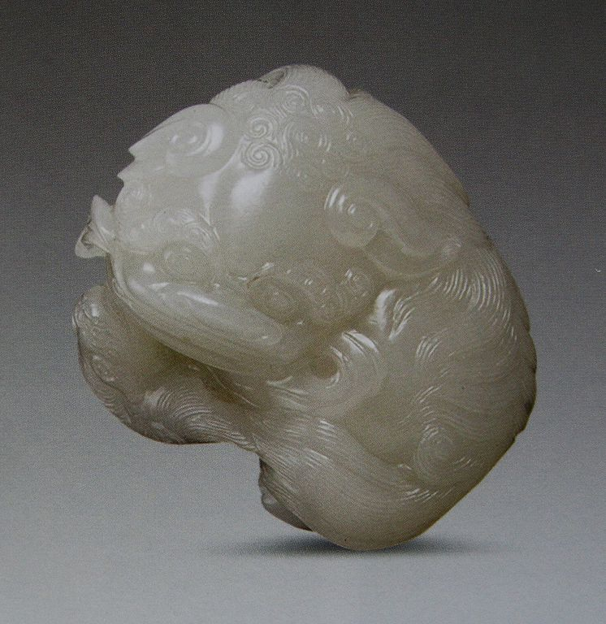
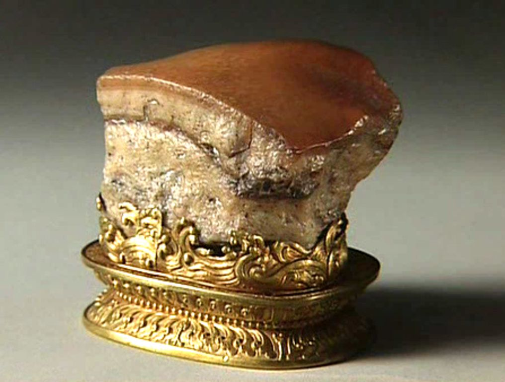
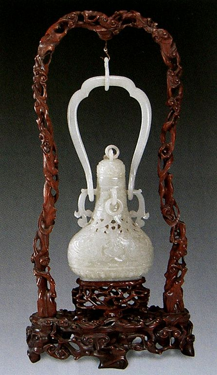

中国玉文化是一首凝固的史诗，有着浓浓的历史沉淀感，每一段历史，玉器都有它特殊的精神气质；每一段历史，玉器都有它特有的形式美感。 6.明清时期玉器工艺——玉意吉祥 巧夺天工 明清两代商业经济繁荣，琢玉规模不断扩大。宫廷有琢玉机构，民间好玉之风盛行，用玉领域空前，玉器工艺发达。 ① 明代玉器工艺 明代宫廷设有玉作，专司皇室御用玉器；民间琢玉也日渐发达，官僚、富商、文人等不同阶层用玉成风，明代玉器倾向实用化和商业化。明代玉器造型有浑厚刚劲之感，也有工整秀丽之气，吉祥装饰题材受到重视。 北京是当时玉器制作的重要之地，琢磨古朴雅致，富有盛誉。苏州琢玉名家荟萃，琢玉匠心独运，工艺精湛。苏州玉工精湛娴熟的刀法和典雅精细的琢玉风格由北上的工匠带到京城，与北京玉器风格既遥相呼应又融为一体，为明代的玉器发展做出了卓越的贡献。 ② 清代玉器工艺 清代宫廷设有“如意馆”和“金玉作”专制皇室、贵戚的金玉文玩器物。民间碾玉作坊遍布全国各地，北京、苏州、扬州、天津、杭州等地是著名琢玉产地。 乾隆时期是清代玉器工艺鼎盛时期，也是我国古代玉器最为昌盛的时代。乾隆皇帝酷爱玉器，有着很高的鉴赏力；不但喜爱、收集古玉，而且对宫廷制玉极为重视，为清代的玉器发展提供了有利的条件。 清代玉器品种有仿古玉器、器皿玉器、人物玉器、动物玉器、 植物玉器、佩饰玉器、文玩玉器、山子玉器等，设计制作形成时代特征。 大禹治水局部
明末清初 狮子滚绣球
清 白菜
清 白菜1
清 白玉 攫普蝉鸟
清 白玉 磬形 片
清 白玉 狩猎纹 鼻烟壶
清 白玉 狩猎纹 鼻烟壶1
清 白玉 蟹
清 碧玉 龙
清 碧玉 龙凤纹 发簪 （一对）
清 碧玉兽面纹爵
清 红烧肉
清 红烧肉1
清 红烧肉3
清 红烧肉4
清 苦瓜
清 青白玉 荷叶形 洗1
 清 珊瑚麻姑献寿 清 珊瑚麻姑献寿清 水晶松竹梅盖瓶
清 玉璜
清 玉佩
清代 白玉 蝉叶纹 带穿
 清代 白玉 福喜无尽纹 带扣 清代 白玉 福喜无尽纹 带扣清代 白玉 花纹 片
清代 白玉 双桃鸟 摆件
 清代 白玉 万寿无疆诗文牌 清代 白玉 万寿无疆诗文牌清代 白玉 蟹
清代 白玉 熏炉
清代 白玉佛手
清代 白玉夔龙花卉提梁壶
清代 白玉留皮佛手
清代 白玉普贤菩萨佩
 清代 白玉人物纹山子 清代 白玉人物纹山子清代 白玉山水人物插屏
清代 白玉万代佩
清代 碧玉龙形佩
 清代 碧玉熏炉 清代 碧玉熏炉清代 璧玉簪
 清代 翡翠 活环龙首耳三足盖炉 清代 翡翠 活环龙首耳三足盖炉清代 翡翠丹凤花插
 清代 凤 清代 凤清代 佛手
 清代 和田白玉方胜式活环洗 清代 和田白玉方胜式活环洗清代 和田碧玉菊瓣花耳盘
清代 和田青玉花瓣式洗
 清代 和田青玉菊花盘 清代 和田青玉菊花盘清代 和阗白玉 夔凤纹提梁卣
 清代 和阗白玉镂雕双凤佩 清代 和阗白玉镂雕双凤佩清代 和阗碧玉古松纹如意耳活环瓶
清代 和阗碧玉雷纹首耳活环壶
 清代 和阗碧玉莲纹三足炉 清代 和阗碧玉莲纹三足炉清代 和阗黄玉龙首觥
清代 和阗黄玉首面纹夔耳活环壶
清代 和阗青玉八卦纹香薰
清代 和阗青玉螭柄花插
清代 和阗青玉三鸠纹执壶
清代 鹤顶红蝉 玉佩
清代 绿松石莲花洗
清代 玛瑙凤首觥
清代 玛瑙活链瓶
清代 玛瑙如意
清代 玛瑙桃椿双孔花插
清代 乾隆朝 云龙吉祥动植物纹玉婉
清代 青白玉 荷叶形洗
 清代 青白玉 寿字玉牌 清代 青白玉 寿字玉牌清代 青金石人物山子
清代 青玉饕餮纹四足方鼎
清代 人物
清代 三联玉印
 清代 珊瑚 仕女 清代 珊瑚 仕女 清代 珊瑚雕花鸟纹瓶 清代 珊瑚雕花鸟纹瓶清代 水晶活链花篮
清代 同心结玉佩
清代 桐荫仕女图玉雕
清代 万寿无疆诗文 牌
清代 心形佩
清代 玉雕俏色双欢
清代 玉雕寿星药铲
清代 玉雕寿星药铲1
清代 玉蝶
清代 玉凤
清代 玉圭璧
清代 玉蝴蝶
清代 玉璜
清代 玉玺
 清代 转心玉佩 清代 转心玉佩清代乾隆 大禹治水图
 清代乾隆 大禹治水图1 清代乾隆 大禹治水图1 清末 翡翠雕龙凤纹吊瓶 清末 翡翠雕龙凤纹吊瓶清乾隆 白玉雕緾枝莲纹三足活环匜
 清乾隆 白玉雕双耳三足炉 清乾隆 白玉雕双耳三足炉清乾隆 白玉抚琴图山子
清乾隆 白玉龙纹环形佩
 清乾隆 白玉瑞兽 清乾隆 白玉瑞兽清乾隆 仿古玉“英雄”饰件
清乾隆 和田玉仿古簋
清乾隆 和田玉双擎烛台
清乾隆 和阗白玉活环双耳万寿纹碗
清乾隆 和阗玉婉
清乾隆 黄玉夔龙佩
清乾隆 九老图笔筒
 清乾隆 青白玉留皮福禄寿山子摆件 清乾隆 青白玉留皮福禄寿山子摆件清乾隆 青金石山水人物山子 副本
 清乾隆 青金石山水人物山子 清乾隆 青金石山水人物山子清乾隆 秋山旅行山子
 清乾隆 三螭龙觚 清乾隆 三螭龙觚清乾隆 三顾茅庐山子玉
清乾隆 玉鸡
清乾隆 玉三羊
清中期 白玉麻姑献寿
清中期 白玉洒金瓜果坠
清中期 白玉双獾镇
清中期 行猎图山子
清中期 和田碧玉白玉杯
清中期 和田玉凤饰龙柄觥
清中期 和田玉夔龙纹觥
清中期 和田玉兽面纹斜方式觚
 清中期 和田玉双蝠葫芦 清中期 和田玉双蝠葫芦 清中期 黄玉 平安无事圆牌 清中期 黄玉 平安无事圆牌清中期 黄玉佛手
清中期 黄玉锦地扳指
清中期 青金石兽耳活环炉
清中期 喜鹊献寿
清中期和田玉四管式炉、瓶、盒
请白菜
图片1
图片2
图片3
图片4
图片5
 晚清 翡翠饕餮纹兽足双耳瑞狮纽盖方鼎 晚清 翡翠饕餮纹兽足双耳瑞狮纽盖方鼎印
玉壶
玉玺
|
| 珠宝设计网站 中国珠宝设计网 国际珠宝网 傲宝网 BACCARAT |
雕塑设计网站 中国雕塑网 |
玉器图库 一些挂件 一些手把件 一些摆件 |
玉器设计与雕刻大赛 上海玉器雕刻神功奖 上海玉器雕刻玉龙奖 北京玉器雕刻天工奖 |
玉器设计与工艺发展动态 玉器设计与工艺过去 玉器设计与工艺现在 玉器设计与工艺未来 |